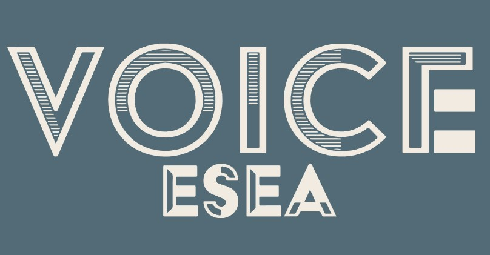

The ESEA Data Collective : Freedom of Information Project
In its third iteration the Freedom of Information Data Project is still currently on-going.
Requested Freedom of Information data from police jurisdictions about hate crimes and ethnicity in collaboration with fellow volunteers, ensuring all 47 UK jurisdictions are covered.
Cleaned and standardised data to conduct analyses following from the 1st and 2nd iterations of the project. With scope to delve further into the data to investigate any new insights.
All for the purpose of eliminating racial discrimination against East and South-East Asians (ESEA) by educating about, and amplifying the voices of East and South-East Asians (ESEA).